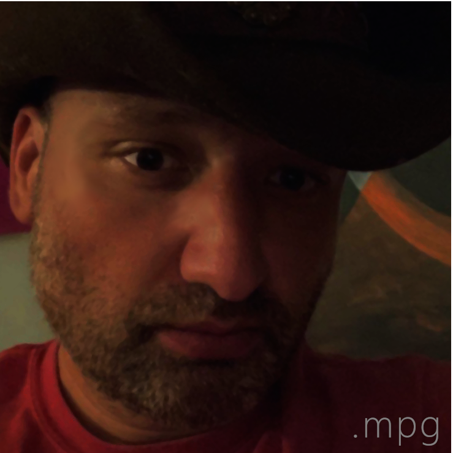

|  |
My name is Matthew Philip Gismondi.I was born on Tuesday, October 19, 1976 at 10:25am to Glenda Viola Gismondi Brown and Pedro Abimael Gismondi. I have two brothers, Mark and Michael, both older. I am M3. Most of what you have heard about me in the last few years is most likely incorrect. I was blessed, and I was the exception to almost every rule. That was on purpose so that I would not get lost. I was created to stand out. I was not meant to blend in. But I also was not meant to be in the spotlight. I am Matty. I am Scissortail Traveler. And Scissortales. I am Mateo. I am The Wheelbarrow, Yarrow, The Red Velvet Armadillo, a Shrinking Violet, and a Groundhog. I am Toby's dad, Jasper's caretaker, and Blue's student. I am the Marshal, Mrs. Peacock, Yves L'Concoction, Luc du Miforelp, Moses, a Rebel, and Sherlock. I am Toberius, Petshopboy, Borogove, Inchikapi, and Gnomerath. I am Mattgismondi, MatchesMonday, MattJumanji,and sometimes just Matt. I am a Dolphin, a Saint, a Crusader, an Eagle, a Viking, a Panther, and a Sooner. I am an artist, a designer, an editor, a gardener, a singer, a bird-watcher, a researcher, and a sugar sculptor. But mostly now I am damaged goods too worn out and frustrated to handle the world. I am not Bae. I am not a predator. I am not an angel or a demon. I am not a sex offender, homophobe, masochist, or sadist. |
home the plan about |